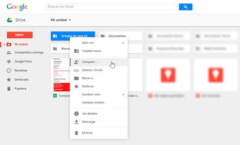
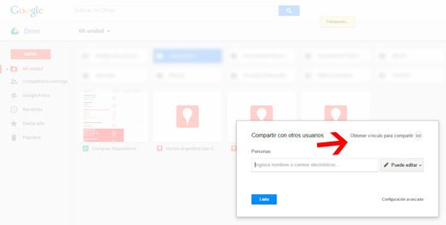
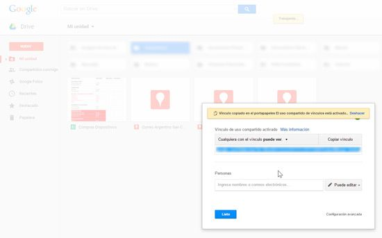

¿Cómo crear una carpeta compartida en Google Drive?
Sin duda alguna una de las mejores características que nos ofrecen la mayoría de los servicios de almacenamiento en línea, más conocidos quizás como discos en la nube, es la posibilidad de compartir con otras personas documentos y otros elementos como imágenes, video y música de forma muy sencilla, lo que nos permite trabajar de forma colaborativa sin necesidad de recurrir a lo engorroso del correo electrónico.
Sin embargo, no todos los servicios de este tipo ofrecen esta posibilidad. En este sentido, Google Drive lo ha implementado, y a nuestro entender es el servicio en que la característica de compartir documentos con otros usuarios se comporta de mejor manera, y además es la más sencilla y cómoda de utilizar. En este documento encontraremos instrucciones y consejos para compartir archivos, convirtiendo una carpeta privada normal en una carpeta compartida.
A partir de este punto, las instrucciones
Paso 1: Lo primero que tenemos que hacer es acceder a nuestra cuenta de Google Drive con nuestras credenciales.
Paso 2: Luego de iniciada sesión en el servicio, seleccionamos la carpeta que deseamos compartir con otros usuarios y pulsamos sobre ella con el botón derecho del ratón. A continuación, en el menú contextual que aparece, seleccionamos la opción “Compartir”.
Paso 3: En este punto, el sistema nos ofrecerá la posibilidad de compartir la carpeta seleccionada mediante un enlace que podemos enviar a través del correo electrónico, o mediante una invitación especial.

Obtener vínculo para enviar por email
En el caso de que optemos por compartir la carpeta a través del enlace, lo único que tenemos que hacer es:
Paso 1: Tildamos la opción “Obtener vínculo para compartir”.
Paso 2: Luego de ello, seleccionamos los tipos de permisos, es decir quienes podrán ver o editar los documentos en esa carpeta. En este sentido, podremos permitir que cualquier persona que tenga el enlace vea o edite el contenido de la carpeta, sin necesidad de iniciar sesión o que lo hayamos invitado.
Paso 3: Para terminar, pulsamos sobre el botón “Listo”.

Compartir mediante una carpeta compartida
En el caso de que deseemos compartir una carpeta específica de nuestro Drive, lo único que tenemos que hacer es invitar a las personas con las que queremos hacerlo introduciendo sus nombres o direcciones de correo electrónico, lo que les permitirá tener acceso a estos archivos almacenados en la carpeta.
